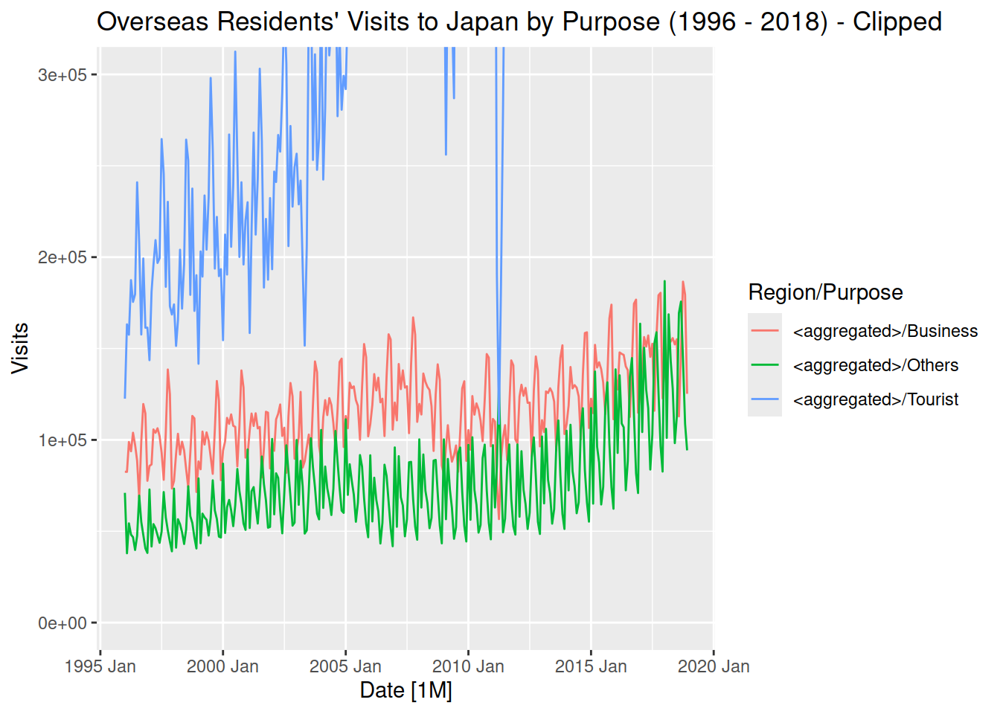
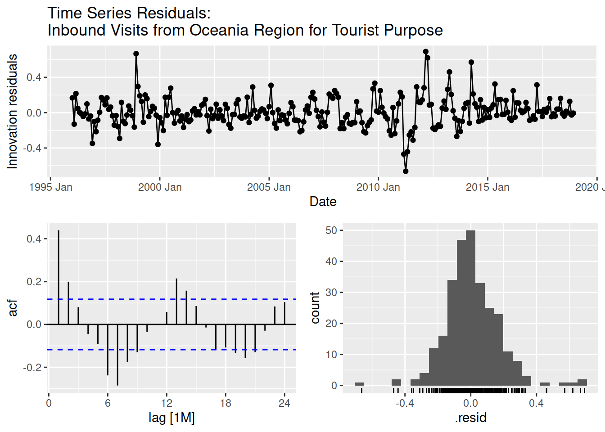
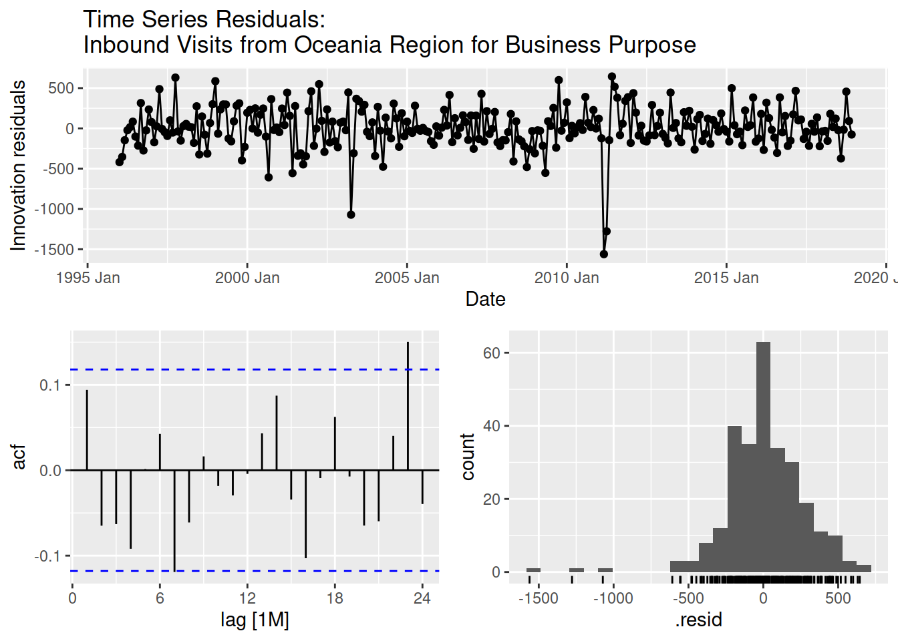
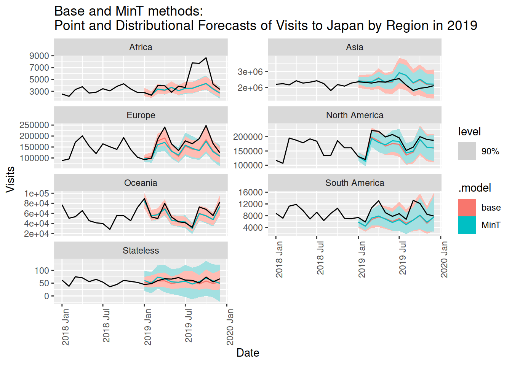

Produce coherent forecasts through forecast reconciliation. Do a forecast reconciliation using a bottom-up approach and through trace minimization (MinT). Evaluate the point and distributional forecasts. Compare the results of the two approaches for forecast reconciliation with forecasts produced without reconciliation. Provide a recommendation based on the results.
Prerequisites
# Load required librarieslibrary(tidyverse)
── Attaching core tidyverse packages ──────────────────────── tidyverse 2.0.0 ──
✔ dplyr 1.1.4 ✔ readr 2.1.5
✔ forcats 1.0.0 ✔ stringr 1.5.1
✔ ggplot2 3.5.1 ✔ tibble 3.2.1
✔ lubridate 1.9.3 ✔ tidyr 1.3.1
✔ purrr 1.0.2
── Conflicts ────────────────────────────────────────── tidyverse_conflicts() ──
✖ dplyr::filter() masks stats::filter()
✖ dplyr::lag() masks stats::lag()
ℹ Use the conflicted package (<http://conflicted.r-lib.org/>) to force all conflicts to become errors
library(tsibble)
Attaching package: 'tsibble'
The following object is masked from 'package:lubridate':
interval
The following objects are masked from 'package:base':
intersect, setdiff, union
library(fable)
Loading required package: fabletools
library(fabletools)library(feasts)
Data Preparation
The dataset has an aggregation structure. The dataset contains 21 time series at the lowest aggregation level. These are grouped by purpose and by region. There are 7 regions of origin and 3 purposes for visits. With the highest aggregation level time series, this totals 32 different time series. The dataset is divided into a training set and a test set. The training set is from the earliest observations to the end of 2018. The test set extends to the end of 2019.
# Load the datasetload("tourism_agg.RData")
# Set aside observations for the training set and test settrain <- tourism_agg |>filter(year(Date) <=2018)test <- tourism_agg |>filter(year(Date) <=2019)
Data Visualization
Total Visits
Recall the plot of the time series. The time series exhibits heteroskedasticity. STL decomposition indicates the seasonal component increases in variance over time. It has an upward trend which has flattened down in the later years.
# Plot the time series of the total visitstrain |>filter(is_aggregated(Purpose), is_aggregated(Region)) |>autoplot() +labs(title ="Total Monthly Overseas Residents' Visits to Japan (1996 - 2018)")
Plot variable not specified, automatically selected `.vars = Visits`
# STL decomposition of the total visitstrain |>filter(is_aggregated(Purpose), is_aggregated(Region)) |>model(STL(Visits ~trend(window =15) +season(window =11), robust =TRUE)) |>components() |>autoplot()
Visits by Region
The majority of overseas visits originate from Asia which is not surprising. The gap of visits to other regions has widened over time. While the visits from other regions remain relatively the same over time, the visits from Asia saw an exponential increase up until recently. The bottom three visits are from South America, Africa, and visitors who are not considered national by any state. There are several possible factors for these numbers such as population count, income level, or proximity.
# Plot time series aggregated by regiontrain |>filter(is_aggregated(Purpose), !is_aggregated(Region)) |>autoplot() +labs(title ="Overseas Residents' Visits to Japan by Region (1996 - 2018)")
Plot variable not specified, automatically selected `.vars = Visits`
# Plot time series aggregated by region and clip to focus on lower countstrain |>filter(is_aggregated(Purpose), !is_aggregated(Region)) |>autoplot() +coord_cartesian(ylim =c(0, 300000)) +labs(title ="Overseas Residents' Visits to Japan by Region (1996 - 2018) - Clipped")
Plot variable not specified, automatically selected `.vars = Visits`
As seen in the earlier analysis, the seasonal behavior of the visits differs between regions. There is not a clear possible explanation for this, but as shown further below, the visits of each region by purpose show different relative magnitude between each purpose. Several other factors could be involved such as the local climate (compared to the climate in Japan), vacation seasons, or business customs.
# Seasonal plot for visits by regiontrain |>filter(is_aggregated(Purpose), !is_aggregated(Region)) |>gg_season(Visits) +labs(title ="Seasonal Plot of Visits to Japan by Region (1996 - 2018)")
# Plot time series by region and purposetrain |>filter(!is_aggregated(Purpose), !is_aggregated(Region)) |>autoplot(Visits, aes(color = Purpose)) +facet_wrap(vars(Region), scales ="free_y", ncol =1) +guides(color =guide_legend("Purpose")) +labs(title ="Overseas Residents' Visits to Japan by Region and Purpose (1996 - 2018)")
Visits by Purpose
Overseas visits are primarily for tourism. The gap between tourism visits and other purposes has widened over time. The visits for tourism saw an exponential increase until recently when it started to plateau.
# Plot time series aggregated by regiontrain |>filter(!is_aggregated(Purpose), is_aggregated(Region)) |>autoplot() +labs(title ="Overseas Residents' Visits to Japan by Purpose (1996 - 2018)")
Plot variable not specified, automatically selected `.vars = Visits`
# Plot time series aggregated by region and clip to focus on lower countstrain |>filter(!is_aggregated(Purpose), is_aggregated(Region)) |>autoplot() +coord_cartesian(ylim =c(0, 300000)) +labs(title ="Overseas Residents' Visits to Japan by Purpose (1996 - 2018) - Clipped")
Plot variable not specified, automatically selected `.vars = Visits`

As seen in the earlier analysis, the seasonal behavior differs by the purpose of the visit. This makes sense given each purpose for visit has different peak and lean periods.
# Seasonal plot for visits by purposetrain |>filter(!is_aggregated(Purpose), is_aggregated(Region))|>gg_season(Visits) +labs(title ="Seasonal Plot of Visits to Japan by Purpose (1996 - 2018)")
Looking at the region of origin depending on each purpose of visit. It is clear that tourism primarily comes from Asia and is not solely explained by the magnitude of its total visits. The gap against other regions shrinks for purposes other than tourism.
# Plot time series by purpose and regiontrain |>filter(!is_aggregated(Purpose), !is_aggregated(Region)) |>autoplot(Visits, aes(color = Region)) +facet_wrap(vars(Purpose), scales ="free_y", ncol =1) +labs(title ="Overseas Residents' Visits to Japan by Purpose and Region (1996 - 2018)" )
In line with these observations, it is clear that the nuances of the different time series that compose the total overseas inbound visits are lost when we only look at the aggregated time series. The forecast reconciliation approach, not only produces coherent forecasts but also utilizes information from the whole aggregation structure in generating forecasts. This approach potentially improves the forecasting performance (Wickramasuriya, Athanasopoulos, and Hyndman 2018). The alternative bottom-up approach, while able to produce coherent forecasts, does not utilize information from the higher aggregation level. At the same time, the low counts from the lower aggregation level make forecasting at this level problematic.1
Model Selection
Although earlier the ARIMA model outperformed the ETS model in a single pair of training and test sets evaluation, ARIMA models require stationary time series which necessitates transformation. Each time series in the aggregation structure requires different Box-Cox transformations, which would make it difficult to reaggregate the forecast. There might be a possible solution, but I cannot figure it out.2 I will show the differences in the forecasts produced by the base ETS model, the bottom-up approach, and the trace minimization approach.3
# Fit the model and specify the two forecast reconciliation approachesfit <- train |>model(base =ETS(Visits)) |>reconcile(bottom_up =bottom_up(base),MinT =min_trace(base, method ="mint_shrink") )
As established earlier, the residuals for the forecast of the total inbound visits have a zero mean, and based on the results of the Ljung-Box test, we cannot reject the null hypothesis of no autocorrelation. The distribution has a longer left tail for a normal distribution, so bootstrapped residuals are used for forecasting.
# Check the residuals of the highest aggregation time seriesfit |>filter(is_aggregated(Purpose), is_aggregated(Region)) |>select(-c(bottom_up, MinT)) |>gg_tsresiduals() +labs(title ="Residual diagnostic graphs for the base ETS model")
# Portmanteau test for autocorrelation# Reject H0 if p < 0.05fit |>select(-c(bottom_up, MinT)) |>filter(is_aggregated(Purpose), is_aggregated(Region)) |>augment() |>features(.innov, ljung_box, lag =24)
Loading required namespace: crayon
# A tibble: 1 × 5
Region Purpose .model lb_stat lb_pvalue
<chr*> <chr*> <chr> <dbl> <dbl>
1 <aggregated> <aggregated> base 27.4 0.286
Visits by Region
The residuals of each time series are not normally distributed given the influence of outliers. Based on Ljung-Box tests, only the time series for Asia, South America, and Africa have residuals with no autocorrelation. Furthermore, the residuals of the time series for South America exhibit heteroskedasticity.
# Check the residuals of time series by regionfor (x inc("Asia", "Europe", "North America", "South America", "Africa", "Oceania", "Stateless")) { plot <- fit |>filter(is_aggregated(Purpose), !is_aggregated(Region)) |>select(-c(bottom_up, MinT)) |>filter(Region == x) |>gg_tsresiduals() +labs(title =paste("Time Series Residuals: Inbound Visits from", x, "Region"))print(plot)}
# Portmanteau test for autocorrelation# Reject H0 if p < 0.05for (x inc("Asia", "Europe", "North America", "South America", "Africa", "Oceania", "Stateless")) { lb_test <- fit |>filter(is_aggregated(Purpose), !is_aggregated(Region)) |>select(-c(bottom_up, MinT)) |>filter(Region == x)|>augment() |>features(.innov, ljung_box, lag =24)print(lb_test)}
# A tibble: 1 × 5
Region Purpose .model lb_stat lb_pvalue
<chr*> <chr*> <chr> <dbl> <dbl>
1 Asia <aggregated> base 30.0 0.184
# A tibble: 1 × 5
Region Purpose .model lb_stat lb_pvalue
<chr*> <chr*> <chr> <dbl> <dbl>
1 Europe <aggregated> base 53.2 0.000550
# A tibble: 1 × 5
Region Purpose .model lb_stat lb_pvalue
<chr*> <chr*> <chr> <dbl> <dbl>
1 North America <aggregated> base 49.1 0.00184
# A tibble: 1 × 5
Region Purpose .model lb_stat lb_pvalue
<chr*> <chr*> <chr> <dbl> <dbl>
1 South America <aggregated> base 36.3 0.0511
# A tibble: 1 × 5
Region Purpose .model lb_stat lb_pvalue
<chr*> <chr*> <chr> <dbl> <dbl>
1 Africa <aggregated> base 23.5 0.493
# A tibble: 1 × 5
Region Purpose .model lb_stat lb_pvalue
<chr*> <chr*> <chr> <dbl> <dbl>
1 Oceania <aggregated> base 187. 0
# A tibble: 1 × 5
Region Purpose .model lb_stat lb_pvalue
<chr*> <chr*> <chr> <dbl> <dbl>
1 Stateless <aggregated> base 49.1 0.00186
Visits by Purpose
The residuals of each time series are not normally distributed given the influence of outliers. Based on Ljung-Box tests, all the time series have residuals with no autocorrelation. However, the residuals of the time series for Others purpose may exhibit heteroskedasticity.
# Check the residuals of time series by purposefor (x inc("Tourist", "Business", "Others")) { plot <- fit |>filter(!is_aggregated(Purpose), is_aggregated(Region)) |>select(-c(bottom_up, MinT)) |>filter(Purpose == x) |>gg_tsresiduals() +labs(title =paste("Time Series Residuals: Inbound Visits under", x, "Purpose"))print(plot)}
# Portmanteau test for autocorrelation# Reject H0 if p < 0.05for (x inc("Tourist", "Business", "Others")) { lb_test <- fit |>filter(!is_aggregated(Purpose), is_aggregated(Region)) |>select(-c(bottom_up, MinT)) |>filter(Purpose == x)|>augment() |>features(.innov, ljung_box, lag =24)print(lb_test)}
# A tibble: 1 × 5
Region Purpose .model lb_stat lb_pvalue
<chr*> <chr*> <chr> <dbl> <dbl>
1 <aggregated> Tourist base 32.3 0.121
# A tibble: 1 × 5
Region Purpose .model lb_stat lb_pvalue
<chr*> <chr*> <chr> <dbl> <dbl>
1 <aggregated> Business base 28.8 0.229
# A tibble: 1 × 5
Region Purpose .model lb_stat lb_pvalue
<chr*> <chr*> <chr> <dbl> <dbl>
1 <aggregated> Others base 30.8 0.160
Lowest Aggregation Level
As expected, the residuals from many of the lowest aggregation level time series violate the assumptions of white noise residuals.
# Check the residuals of time series at the lowest aggregation levelfor (x inc("Asia", "Europe", "North America", "South America", "Africa", "Oceania", "Stateless")) {for (y inc("Tourist", "Business", "Others")) { plot <- fit |>filter(!is_aggregated(Purpose), !is_aggregated(Region)) |>select(-c(base, bottom_up)) |>filter(Region == x & Purpose == y) |>gg_tsresiduals() +labs(title =paste("Time Series Residuals:\nInbound Visits from", x, "Region", "for", y, "Purpose" ) )print(plot) }}


For unbiased coherent forecasts to be produced, the base forecasts must also be unbiased (mean zero residuals)(Wickramasuriya, Athanasopoulos, and Hyndman 2018). This condition is met. Although many time series have residuals with autocorrelation and have occasional outliers, all residuals have a mean close to zero. Given this, in the preceding section, although I will show the output of the forecasts for time series aggregated by either region or purpose, I will mainly focus on time series for the highest aggregation level.
Forecasting
As the normality assumption of residuals is violated, prediction intervals are generated by bootstrapping residuals.
# Set seed for reproducibilityset.seed(2024)# Forecast using bootstrapped residualsfc <- fit |>forecast(h ="1 year", bootstrap =TRUE, times =1000)
Total Visits
Regarding point forecasts, naturally, the forecasts from each approach are fairly close to each other.
# Plot the forecasts to the test setfc |>filter(is_aggregated(Purpose), is_aggregated(Region)) |>autoplot(test |>filter(year(Date) >2015), level =NULL) +labs(title ="Point Forecasts of Monthly Visits to Japan in 2019")
On the other hand, for prediction intervals, the trace minimization approach is clearly narrower than the base forecast and a little better than the bottom-up approach. Although the true value of the test set is well within the interval for all approaches, wider intervals are penalized by accuracy measures.
# Plot the point and distributional forecast (base and MinT)fc |>filter(is_aggregated(Purpose), is_aggregated(Region), .model %in%c("MinT", "base") ) |>autoplot(test |>filter(year(Date) >2015), level =90) +labs(title ="Base and MinT methods:\nPoint and Distributional Forecasts of Visits to Japan in 2019" )
# Plot the point and distributional forecast (bottom-up and MinT)fc |>filter(is_aggregated(Purpose), is_aggregated(Region), .model %in%c("MinT", "bottom_up") ) |>autoplot(test |>filter(year(Date) >2015), level =90) +labs(title ="Bottom-up and MinT methods:\nPoint and Distributional Forecasts of Visits to Japan in 2019" )
The forecasts from the trace minimization approach are better than the other two in both accuracy measures of the point and distributional forecasts. The base forecasts have the worst performance.
# Total visits# Calculate the point and distributional forecast accuracy measures# Lower is better for RMSE, MASE, RMSSE# For CRPS, aim for more than 0, higher is betterfc |>filter(is_aggregated(Purpose), is_aggregated(Region)) |>accuracy( test, measures =list(rmse = RMSE, mase = MASE, rmsse = RMSSE, skill =skill_score(CRPS)) ) |>group_by(.model) |>summarise(rmse =mean(rmse), mase =mean(mase), rmsse =mean(rmsse), skill =mean(skill) ) |>arrange(rmsse)
# A tibble: 3 × 5
.model rmse mase rmsse skill
<chr> <dbl> <dbl> <dbl> <dbl>
1 MinT 269073. 1.35 1.27 -0.835
2 bottom_up 294813. 1.54 1.39 -1.06
3 base 297163. 1.49 1.40 -1.15
Same as earlier, the point forecasts for each approach are fairly close.
# Plot the forecasts by region to the test setfc |>filter(is_aggregated(Purpose), !is_aggregated(Region)) |>autoplot(test |>filter(year(Date) >2017), level =NULL) +facet_wrap(vars(Region), scales ="free_y", ncol =2) +theme(axis.text.x =element_text(angle =90, hjust =1)) +labs(title ="Point Forecasts of Monthly Visits to Japan by Region in 2019")
On the other hand, for prediction intervals, the true value of the test set is occasionally outside the prediction interval. This is most evident in the time series forecasts for the Africa region. Given this, the effect on the accuracy measures of the size of prediction intervals is less clear.
# Plot the point and distributional forecast (base and MinT)fc |>filter(is_aggregated(Purpose), !is_aggregated(Region), .model %in%c("MinT", "base") ) |>autoplot(test |>filter(year(Date) >2017), level =90) +facet_wrap(vars(Region), scales ="free_y", ncol =2) +theme(axis.text.x =element_text(angle =90, hjust =1)) +labs(title ="Base and MinT methods:\nPoint and Distributional Forecasts of Visits to Japan by Region in 2019" )

# Plot the point and distributional forecast (bottom-up and MinT)fc |>filter(is_aggregated(Purpose), !is_aggregated(Region), .model %in%c("MinT", "bottom_up") ) |>autoplot(test |>filter(year(Date) >2017), level =90) +facet_wrap(vars(Region), scales ="free_y", ncol =2) +theme(axis.text.x =element_text(angle =90, hjust =1)) +labs(title ="Bottom-up and MinT methods:\nPoint and Distributional Forecasts of Visits to Japan by Region in 2019" )
The base forecast has the best point and distributional forecast accuracy. The trace minimization approach is right behind the performance of the base forecast. The bottom-up approach has the worst performance.
# By Region# Calculate the point and distributional forecast accuracy measures# Lower is better for RMSE, MASE, RMSSE# For CRPS, aim for more than 0, higher is betterfc |>filter(is_aggregated(Purpose), !is_aggregated(Region)) |>accuracy( test, measures =list(rmse = RMSE, mase = MASE, rmsse = RMSSE, skill =skill_score(CRPS)) ) |>group_by(.model) |>summarise(rmse =mean(rmse), mase =mean(mase), rmsse =mean(rmsse), skill =mean(skill) ) |>arrange(rmsse)
# A tibble: 3 × 5
.model rmse mase rmsse skill
<chr> <dbl> <dbl> <dbl> <dbl>
1 base 53051. 2.50 2.14 -0.270
2 MinT 55328. 2.53 2.19 -0.286
3 bottom_up 58943. 2.74 2.35 -0.448
Visits by Purpose
Same as earlier, the point forecasts for each approach are fairly close.
# Plot the forecasts by purpose to the test setfc |>filter(!is_aggregated(Purpose), is_aggregated(Region)) |>autoplot(test |>filter(year(Date) >2017), level =NULL) +facet_wrap(vars(Purpose), scales ="free_y", ncol =1) +labs(title ="Point Forecasts of Monthly Visits to Japan by Purpose in 2019")
On the other hand, for prediction intervals, it is harder to compare visually the size of intervals of the different approaches, so it is best to look at the numerical measures. The true value of the test set is within the interval for all approaches.
# Plot the point and distributional forecast (base and MinT)fc |>filter(!is_aggregated(Purpose), is_aggregated(Region), .model %in%c("MinT", "base") ) |>autoplot(test |>filter(year(Date) >2017), level =90) +facet_wrap(vars(Purpose), scales ="free_y", ncol =1) +labs(title ="Base and MinT methods:\nPoint and Distributional Forecasts of Visits to Japan by Purpose in 2019" )
# Plot the point and distributional forecast (MinT and bottom-up)fc |>filter(!is_aggregated(Purpose), is_aggregated(Region), .model %in%c("MinT", "bottom_up") ) |>autoplot(test |>filter(year(Date) >2017), level =90, line =3) +facet_wrap(vars(Purpose), scales ="free_y", ncol =1) +labs(title ="MinT and bottom-up methods:\nPoint and Distributional Forecasts of Visits to Japan by Purpose in 2019" )
The base forecasts have the best point forecast accuracy. This is better than the accuracy of the trace minimization approach, but somewhat worse with regards to the distributional forecast accuracy. The trace minimization approach has the best performance in distributional forecasts. The bottom-up approach has the worst performance in both point and distributional forecasts.
# By Purpose# Calculate the point and distributional forecast accuracy measures# Lower is better for RMSE, MASE, RMSSE# For CRPS, aim for more than 0, higher is betterfc |>filter(!is_aggregated(Purpose), is_aggregated(Region)) |>accuracy( test, measures =list(rmse = RMSE, mase = MASE, rmsse = RMSSE, skill =skill_score(CRPS)) ) |>group_by(.model) |>summarise(rmse =mean(rmse), mase =mean(mase), rmsse =mean(rmsse), skill =mean(skill) ) |>arrange(rmsse)
# A tibble: 3 × 5
.model rmse mase rmsse skill
<chr> <dbl> <dbl> <dbl> <dbl>
1 base 89983. 1.08 0.927 -0.107
2 MinT 94853. 1.07 0.955 -0.0941
3 bottom_up 104026. 1.20 1.03 -0.168
Cross-validation
I also evaluated the point and distributional forecast using a cross-validation approach. The codes used are shown below, but the eval is set to FALSE to save time on rendering. For the total visits time series, the base forecasts have pulled up ahead from the bottom and became the best performing in either point and distributional forecast. For time series by region, the ranking stays fairly the same with base forecasts at the lead followed by the MinT forecasts. For time series by purpose, the trace minimization approach shows the best performance in both point and distributional forecasts. Previously, the base forecasts had better performance in point forecasts, and the trace minimization approach only had better performance in distributional forecasts. The bottom-up approach is usually the worst-performing of the three. In any case, the performance of the different approaches here is much closer.
# Prepare training set for cross-validationtrain_cv <- train |>stretch_tsibble(.init =24, .step =12)
# Fit the modelsfit_cv <- train_cv |>model(base =ETS(Visits)) |>reconcile(bottom_up =bottom_up(base),MinT =min_trace(base, method ="mint_shrink") )
# Set seed for reproducibilityset.seed(2024)# Produce a forecast with bootstrapped residualsfc_cv <- fit_cv |>forecast(h ="1 year", bootstrap =TRUE, times =1000)
Validating Forecast Coherence
An advantage of the forecast reconciliation approach is generating coherent forecasts. In this section, I will confirm if the forecasts for time series in the lower aggregation level add up or are equivalent to the forecast produced for time series in the highest aggregation level.
Base Forecast
As seen below, the forecasts for the total visits, the sum of the forecasts by region, and the sum of forecasts by purpose are close but not quite the same.
# Sum of the individual forecastsbase_sum_region <- fc |>filter(!is_aggregated(Region), is_aggregated(Purpose)) |>filter(.model =="base") |>summarise(sum(.mean)) |>rename(mean ='sum(.mean)')base_sum_purpose <- fc |>filter(is_aggregated(Region), !is_aggregated(Purpose)) |>filter(.model =="base") |>summarise(sum(.mean)) |>rename(mean ='sum(.mean)')
# Forecast of the total visitsbase_agg <- fc |>filter(is_aggregated(Region), is_aggregated(Purpose)) |>filter(.model =="base") |>rename(mean ='.mean') |>select(Date, mean)
# Plot the forecasts for total visits and aggregated forecasts by region and purposeggplot(NULL, aes(y = mean, x = Date)) +geom_line(data = base_agg, aes(color ="Base"), size =2, alpha =0.4) +geom_line(data = base_sum_region, aes(color ="By region"), size =2, alpha =0.4) +geom_line(data = base_sum_purpose, aes(color ="By purpose"), size =2, alpha =0.4) +scale_color_manual(name ="Aggregation",values =c("Base"="cyan", "By region"="magenta", "By purpose"="yellow") ) +labs(title ="Base Forecasts:\nAggregated Point Forecasts of Total Visits to Japan in 2019" )
Warning: Using `size` aesthetic for lines was deprecated in ggplot2 3.4.0.
ℹ Please use `linewidth` instead.
Coherent Forecast
On the other hand, the forecasts for the lower aggregation level produced by forecast reconciliation add up to the forecast for the highest aggregation level. As seen below, the color of the line plots for each has been mixed into one color.
# Sum of the individual forecastsmint_sum_region <- fc |>filter(!is_aggregated(Region), is_aggregated(Purpose)) |>filter(.model =="MinT") |>summarise(sum(.mean)) |>rename(mean ='sum(.mean)')mint_sum_purpose <- fc |>filter(is_aggregated(Region), !is_aggregated(Purpose)) |>filter(.model =="MinT") |>summarise(sum(.mean)) |>rename(mean ='sum(.mean)')
# Forecast of the total visitsmint_agg <- fc |>filter(is_aggregated(Region), is_aggregated(Purpose)) |>filter(.model =="MinT") |>rename(mean ='.mean') |>select(Date, mean)
# Plot the forecasts for total visits and aggregated forecasts by region and purposeggplot(NULL, aes(y = mean, x = Date)) +geom_line(data = mint_agg, aes(color ="MinT"), size =2, alpha =0.4) +geom_line(data = mint_sum_region, aes(color ="By region"), size =2, alpha =0.4) +geom_line(data = mint_sum_purpose, aes(color ="By purpose"), size =2, alpha =0.4) +scale_color_manual(name ="Aggregation",values =c("MinT"="cyan", "By region"="magenta", "By purpose"="yellow") ) +labs(title ="MinT Forecasts:\nAggregated Point Forecasts of Total Visits to Japan in 2019" )
Conclusion
Forecast reconciliation produces coherent forecasts for a collection of time series with an aggregation structure. Forecast reconciliation through trace minimization consistently outperforms the other approach for producing coherent forecasts, the bottom-up approach. On the other hand, based on evaluations using a single pair of training and test sets and time-series cross-validation, there is no conclusive best-performing approach. However, it is preferable to have coherent forecasts. Alternatively, if coherence is not required by the forecasting task, the choice between these two is decided by the weight or the value of the forecast accuracy in different time series. Without a more specific requirement, I recommend using forecast reconciliation through trace minimization.
Additionally, I recommend exploring other models to produce better forecasts for the lower aggregation level time series. The M5 forecasting competition in 2020 has shown the potential of machine learning methods, particularly LightGBM, a tree-based method (Makridakis, Petropoulos, and Spiliotis 2022). This method dealt with a dataset that exhibits intermittency at lower hierarchical levels, which the dataset here also exhibits. However, the competition also gave access to exogenous variables to produce these forecasts. Therefore, I only recommend attempting this method if the potential added benefit can justify the added time and effort required.
References
Hyndman, Rob J., Roman A. Ahmed, George Athanasopoulos, and Han Lin Shang. 2011. “Optimal Combination Forecasts for Hierarchical Time Series.”Computational Statistics & Data Analysis 55 (9): 2579–89. https://doi.org/10.1016/j.csda.2011.03.006.
Makridakis, Spyros, Fotios Petropoulos, and Evangelos Spiliotis. 2022. “The M5 Competition: Conclusions.”International Journal of Forecasting 38 (4): 1576–82. https://doi.org/10.1016/j.ijforecast.2022.04.006.
Wickramasuriya, Shanika L., George Athanasopoulos, and Rob J. Hyndman. 2018. “Optimal Forecast Reconciliation for Hierarchical and Grouped Time Series Through Trace Minimization.”Journal of the American Statistical Association 114 (526): 804–19. https://doi.org/10.1080/01621459.2018.1448825.
Footnotes
A middle-out approach is not applicable given the aggregation structure, grouped rather than purely hierarchical. On the other hand, a top-down approach has been shown unable to produce unbiased coherent forecasts even with unbiased base forecasts (Hyndman et al. 2011).↩︎
I am aware of back-transformation, but as far as I know, there is not an easy way to do it for this specific scenario using the R packages I have been using.↩︎
I have not shown it here but the mint_shrink method performed the best among all other methods for minimum trace forecast reconciliation. The wls_var is a close second.↩︎
Forecast reconciliation does not affect the residuals, so there is no need for separate diagnostics.↩︎
Bear in mind, in addition to the assumption of normality, the residuals from Asia, South America, and Africa time series violate the assumption of uncorrelated residuals. Furthermore, the residuals from the time series for South America exhibit heteroskedasticity.↩︎